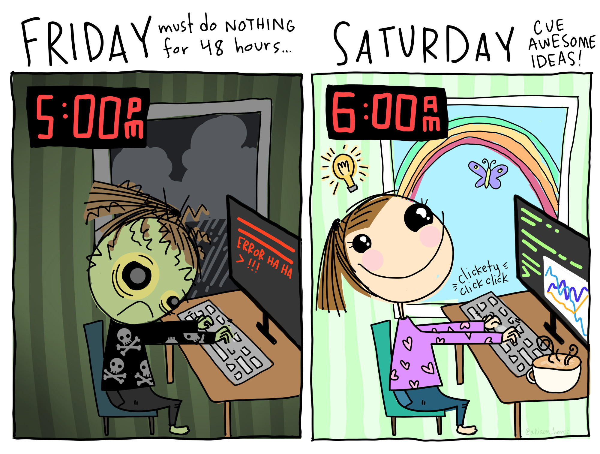

Module Aims
This module aims to provide you with advanced skills in interpretation of quantitative and qualitative research data relevant to whole-organism biology, and to develop critical understanding of the ethical considerations involved in the collection of data. The module also aims to underpin the other modules in the Masters Framework by investigating experimental design, ethics, project management and funding.
You will be able to present findings of scientific research in a variety of appropriate ways, as well as critically evaluating, interpreting and relaying knowledge gained from secondary sources to peers.
Delivery Mode
The RMDA module takes a blended approach to learning, as such many of the sessions provided, including drop-in sessions, will be via TEAMS. This will allow you to use R in real time, in class, inputting commands and analysing data as we go. The idea behind this is that you will be able to highlight and rectify any issues using R at the point of learning so that you can then continue confidently with tasks in your own time.
Issues will arise especially if this is your first opportunity to use R, that’s ok, we have a great team to support you so don’t be afraid to speak up and get the help you need right away. We will discuss how to do this and general guidelines on how you can contribute to the online sessions during our module introduction session (Face to Face classroom session)
Attendance and engagement
Please bear in mind that attendance and engagement with module content is vital for successful completion of the module. Please notify your year tutor immediately if you have any concerns regarding an inability to do this over an extended period. The demonstrator team and I will be monitoring engagement and I will contact you and your tutor to “check in” if I believe there are issues. If I do check in with you, remember I am doing this out of concern for your learning experience and not to chastise so please engage with these opportunities. The sooner we know there is a problem, the sooner we can help.
Learning Outcomes

Knowledge and Understanding
By the end of this module, you should be able to:
- Evaluate ethical considerations of scientific research.
- Evaluate original research projects using an in-depth understanding of the scientific process.
- Demonstrate a level of expertise in highly specialised and advanced research and analytical tools, technical communication and professional skills.
Skills, Qualities and Attributes
By the end of this module, you should be able to:
- Synthesise and critically analyse scientific data and current literature both generally and specifically and, where appropriate, propose new hypotheses.
- Communicate current knowledge and latest research in a specific area of interest to a variety of audiences or specialist levels.
- Demonstrate independent or self-directed learning and initiative at a professional or equivalent level.
Requesting support with inaccessible files or features
If you locate any resource within this Learning Room that you cannot access for any reason, please contact Felipe Melo via email felipe.melo@ntu.ac.uk